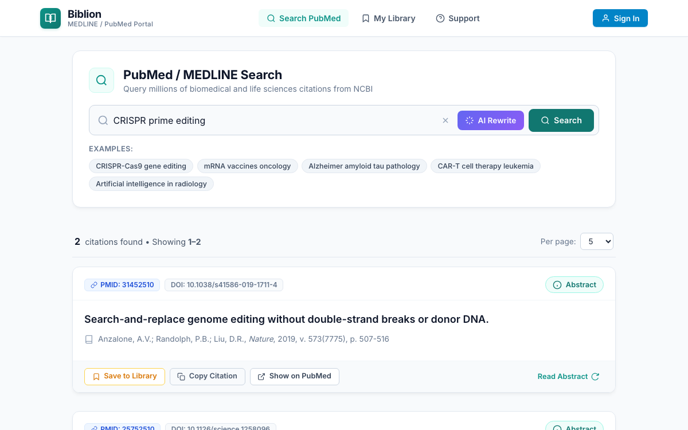
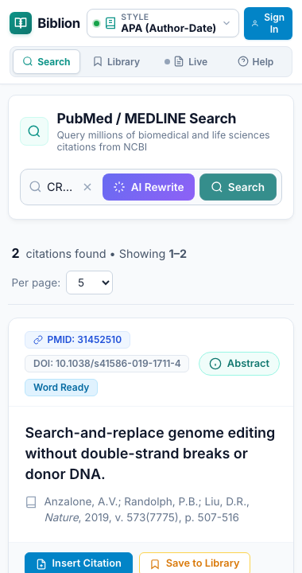

#Biblion Platform Overview: Web & Add-in Modes
Product: Biblion Biomedical Literature & Citation Assistant
Audience: Academic Researchers, Biomedical Scientists, Medical Writers & Clinicians
Maintained by: Documentation Writer
#1. What Is Biblion?
Biblion is a unified biomedical literature discovery and citation management platform. It connects researchers directly to the National Center for Biotechnology Information (NCBI) PubMed / MEDLINE database containing over 36 million citations, integrating advanced search, local and cloud-synced library curation, AI-assisted query reformulation, and automated manuscript referencing into a single seamless tool.
Biblion operates in two complementary functional modes designed to support researchers at every stage of the writing lifecycle:
- Standalone Web Mode ("Web"): A full-featured web application running in any modern browser for literature discovery, exploratory research, and library organization.
- Microsoft Word Add-in Mode ("AddIn"): An interactive Office.js taskpane embedded directly into Microsoft Word for in-text citation insertion, live cursor tracking, and automated bibliography generation.
Biblion automatically detects its runtime environment upon initialization and adapts its user interface, features, and citation tools to provide the optimal experience.
#2. Standalone Web Mode ("Web")

#Overview & Purpose
Standalone Web Mode allows researchers to access the full power of Biblion directly in standard web browsers (Google Chrome, Mozilla Firefox, Apple Safari, Microsoft Edge) on desktops, laptops, or tablets without opening Microsoft Word.
#Key Web Mode Capabilities
- Direct PubMed / MEDLINE Literature Discovery: Execute keyword, author, and journal searches with real-time feedback, query suggestions, and curated example topics.
- Interactive Abstract Inspection: Flip any search result card with the Abstract button to review the full study abstract, publication metadata, journal citation, and MeSH indexing terms without navigating away.
- AI PubMed Query Rewriter: Formulate complex, high-precision Boolean search strings using state-of-the-art LLMs via Bring-Your-Own-Key (BYOK) providers (OpenRouter, OpenAI, Groq), complete with visual diff inspection and zero-hit fallback to Automatic Term Mapping (ATM).
- My Library & Offline Curation: Store papers locally using client-side IndexedDB. Organize articles into custom collections, assign color-coded tags, write research notes, and star key references.
- Clipboard Citation Copying: In Web Mode, each article card features a dedicated Copy Citation button. Clicking it instantly formats the citation (in APA 7th style by default) and copies both the in-text reference and full bibliography entry to the system clipboard, ready to paste into Google Docs, Overleaf / LaTeX, Markdown, Notion, or email drafts.
- Multi-Format Export: Export library collections directly to standard academic formats including BibTeX (
.bib), RIS (.ris), and structured JSON. - Cloud Synchronization & Account Services: Sign in to sync your library across devices via the encrypted Biblion Cloud API, manage your 15-day free trial, and access subscription billing.
#When to Use Web Mode
- Conducting preliminary literature reconnaissance and exploratory reading.
- Organizing research libraries, tagging papers, and compiling notes outside of drafting sessions.
- Drafting manuscripts in alternative editors such as Google Docs, Overleaf / LaTeX, Scrivener, or Markdown.
- Accessing your research library from shared laboratory workstations, mobile devices, or computers without Microsoft Office installed.
#3. Microsoft Word Add-in Mode ("AddIn")

#Overview & Purpose
Microsoft Word Add-in Mode embeds Biblion directly into Microsoft Word (Office 365, Word Desktop on Windows and macOS, and Word on the Web) as a persistent, responsive 380px taskpane. Built on Microsoft's modern Office.js API, AddIn Mode transforms Word into an integrated scientific authoring environment.
#Dedicated Add-in Capabilities
When running inside Word, Biblion unlocks specialized manuscript authoring tools that interact directly with the open document:
- Direct In-Text Citation Insertion: In Word mode, the search cards dynamically surface an Insert Citation button. Placing your document cursor anywhere in your manuscript and clicking Insert Citation writes real Word content controls and field codes directly into the text with instant visual feedback.
- Dynamic Citation Style Selector: A persistent style trigger in the taskpane header provides instant switching between major biomedical and scientific citation styles:
- APA (7th Edition): Author-date format
(Doudna & Charpentier, 2014) - IEEE: Numbered bracket format
[1] - Vancouver: Numbered superscript format
¹ - Harvard: Author-date format
(Doudna and Charpentier, 2014) - Chicago (17th Edition): Author-date format
(Doudna and Charpentier 2014) - Nature: Numbered superscript with journal styling
- MLA (9th Edition): Author-page format

Selecting any style automatically and synchronously reformats all existing in-text citations and the end-of-document reference list throughout the entire Word document.
- Live References Cursor Tracker: The taskpane navigation displays a dedicated Live References tab (
cursor-nav-item). As you navigate your document, Biblion continuously inspects the paragraph and sentence surrounding your active cursor, displaying exactly which references are cited at that position and offering instant actions to inspect abstracts, edit styles, or jump between citations. - Automated Bibliography Generation: Biblion maintains a synchronized, publication-ready References section at the conclusion of your manuscript, keeping numbers and entries alphabetical or sequential according to the selected journal rules.
#When to Use Add-in Mode
- Actively writing, revising, and formatting scientific manuscripts, grant proposals, and review articles in Microsoft Word.
- Citing references directly at the insertion point with a single click.
- Reformatting an entire manuscript's citation style to comply with journal submission guidelines (e.g., converting from APA to Vancouver or IEEE).
- Reviewing co-authored drafts to verify what citations are linked to specific sentences and paragraphs.
#4. Feature Matrix: Web Mode vs. AddIn Mode
| Feature / Capability | Standalone Web Mode ("Web") | Microsoft Word Add-in Mode ("AddIn") | Notes |
|---|---|---|---|
| Host Environment | Any modern Web Browser | Microsoft Word (Desktop & Web) | Auto-detected via Office.js onReady |
| PubMed / MEDLINE Search | Yes | Yes | Over 36M biomedical citations |
| Abstract Flip Card View | Yes | Yes | Abstract text, authors, DOI, MeSH terms |
| AI Query Rewriter & BYOK | Yes | Yes | OpenRouter, OpenAI, Groq support |
| My Library & Collections | Yes | Yes | Offline IndexedDB storage |
| Tags & Research Notes | Yes | Yes | Custom color tags and annotations |
| BibTeX, RIS, JSON Export | Yes | Yes | Standard bibliographic export |
| Cloud Sync & Free Trial | Yes | Yes | Encrypted cross-device sync |
| Citation Action on Cards | Copy Citation | Insert Citation | Clipboard copy vs. direct document injection |
| Citation Style Selector | Hidden (defaults to APA) | Active in Header | 7 major academic styles |
| Live References Tracker | Hidden | Active in Nav | Real-time sentence/cursor analysis |
| Document Bibliography | Manual paste | Automatic in Word | Synchronized reference list |
| Window Adaptability | Responsive (Desktop to Mobile) | Fixed Taskpane (320px - 380px) | Optimized for narrow taskpanes |
#5. Getting Started & User Manuals
Explore our comprehensive, step-by-step guides to master every feature of Biblion:
- Word Add-in User Guide: Complete walkthrough of installing the taskpane, inserting citations, and managing bibliographies.
- PubMed Search & Citations Guide: How to construct searches, inspect abstracts, and manage search results.
- AI Query Rewriter Guide: Utilizing LLMs to expand biomedical queries with MeSH terms and handle zero-hit fallbacks.
- Citation Styles & Bibliographies Guide: In-depth guide to supported styles, bracket conventions, and automated reference lists.
- Live References Guide: Tracking cursor citations in real time inside Microsoft Word.
- Library, Offline Sync & Export Guide: Managing collections, working offline, cloud synchronization, and exporting BibTeX/RIS files.
- Account & Sign-In Guide: Creating an account, password management, and security on shared computers.
- Billing & Subscriptions Guide: 15-day free trial details, Lemon Squeezy checkout, grace periods, and data retention.
- Using Biblion in a Browser Guide: Guide dedicated to maximizing productivity in standalone web mode.